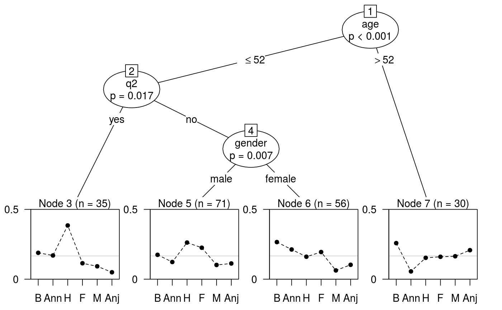
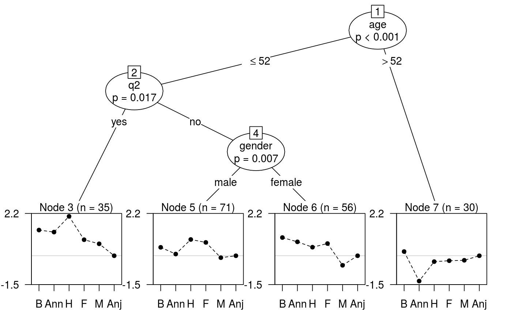

Recursive partitioning based on Plackett-Luce models.
pltree(formula, data, subset, na.action, cluster, ref = NULL, ...) # S3 method for pltree predict(object, newdata = NULL, type = c("itempar", "rank", "best", "node"), ...)
| formula | a symbolic description of the model to be fitted, of the form
|
|---|---|
| data | an optional data frame containing the variables in the model. |
| subset | A specification of the rows to be used, passed to
|
| na.action | how NAs are treated, passed to |
| cluster | an optional vector of cluster IDs to be employed for clustered
covariances in the parameter stability tests, see |
| ref | an integer or character string specifying the reference item (for which log ability will be set to zero). If NULL the first item is used. |
| ... | additional arguments, passed to |
| object | a fitted model object of class |
| newdata | an optional data frame to use for prediction instead of the original data. |
| type | the type of prediction to return for each group, one of:
|
An object of class "pltree" inheriting from "bttree"
and "modelparty".
Plackett-Luce trees are an application of model-based recursive partitioning
(implemented in mob) to Plackett-Luce models for
rankings. The partitioning is based on ranking covariates, e.g. attributes of
the judge making the ranking, or conditions under which the ranking is made.
The response should be a grouped_rankings object that groups
rankings with common covariate values. This may be included in a data frame
alongside the covariates.
Various methods are provided for "pltree" objects, most of them
inherited from "modelparty" objects (e.g. print,
summary), or "bttree" objects (plot). itempar
extracts the abilities or item parameters from the Plackett-Luce models in
each node of the tree using itempar.PlackettLuce. The plot
method employs the node_btplot
panel-generating function.
# Bradley-Terry example if (require(psychotree)){ ## Germany's Next Topmodel 2007 data data("Topmodel2007", package = "psychotree") ## convert paircomp object to grouped rankings R <- as.grouped_rankings(Topmodel2007$preference) ## rankings are grouped by judge print(R[1:2,], max = 6) ## Topmodel2007[, -1] gives covariate values for each judge head(Topmodel2007[, -1], 2) ## fit partition model based on all variables except preference ## set npseudo = 0 as all judges rank all models tm_tree <- pltree(R ~ ., data = Topmodel2007[, -1], minsize = 5, npseudo = 0) ## plot shows abilities constrained to sum to 1 plot(tm_tree, abbreviate = 1, yscale = c(0, 0.5)) ## instead show log-abilities with Anja as reference (need to used index) plot(tm_tree, abbreviate = 1, worth = FALSE, ref = 6, yscale = c(-1.5, 2.2)) ## log-abilities, zero sum contrast itempar(tm_tree, log = TRUE) ## abilities with Anja as reference itempar(tm_tree, ref = "Anja") ## results for the first three judges newdata <- Topmodel2007[1:3,] ### fitted probabilities predict(tm_tree, newdata) ### fitted log-abilities, with Anni as reference predict(tm_tree, newdata, log = TRUE, ref = "Anni") ### item ranks predict(tm_tree, newdata, type = "rank") ### top ranked item predict(tm_tree, newdata, type = "best") ### node the judge belongs to predict(tm_tree, newdata, type = "node") }#> 1 #> "Barbara > Anni, Barbara > Hana, Anni > Hana, Barbara > Fiona, Fiona > Anni, Fiona > Hana, ..." #> 2 #> "Anni > Barbara, Hana > Barbara, Hana > Anni, Fiona > Barbara, Anni > Fiona, Hana > Fiona, ..."#> 1 2 3 #> "7" "3" "3"